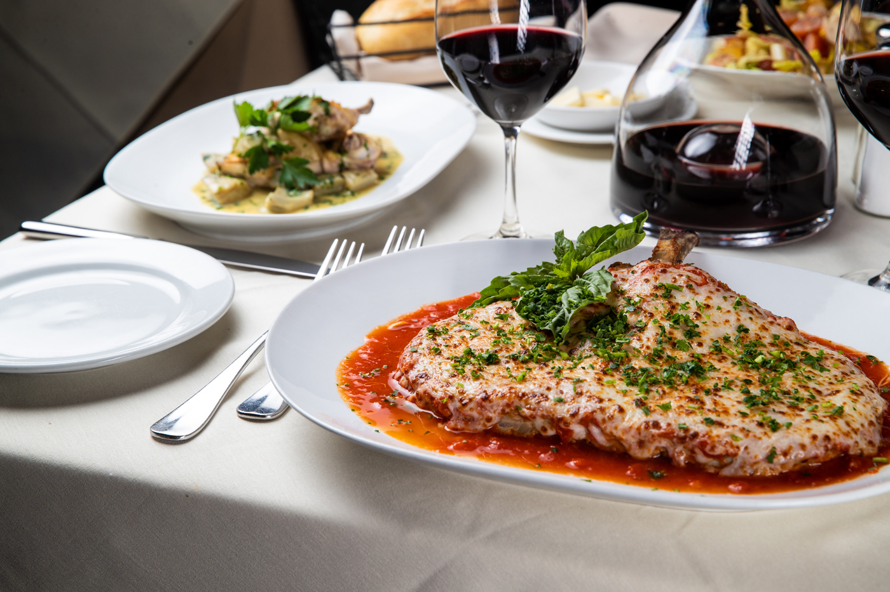

Grilled bread topped with diced tomatoes, garlic, and olive oil. A classic Italian starter.
Fresh mozzarella, basil, and tomatoes drizzled with balsamic glaze. A refreshing appetizer.
Crispy calamari served with marinara sauce, perfect for sharing.
Salmon fillet grilled to perfection with a fresh lemon butter sauce.
Classic Italian lasagna made with layers of pasta, ricotta, marinara sauce, and mozzarella.
Creamy risotto made with fresh seasonal vegetables and Parmesan cheese.
Classic Italian dessert made with espresso-soaked ladyfingers and mascarpone cream.
Italian-style ice cream, rich and creamy, served in various flavors.
Light and fluffy cheesecake made with ricotta cheese and topped with fresh berries.